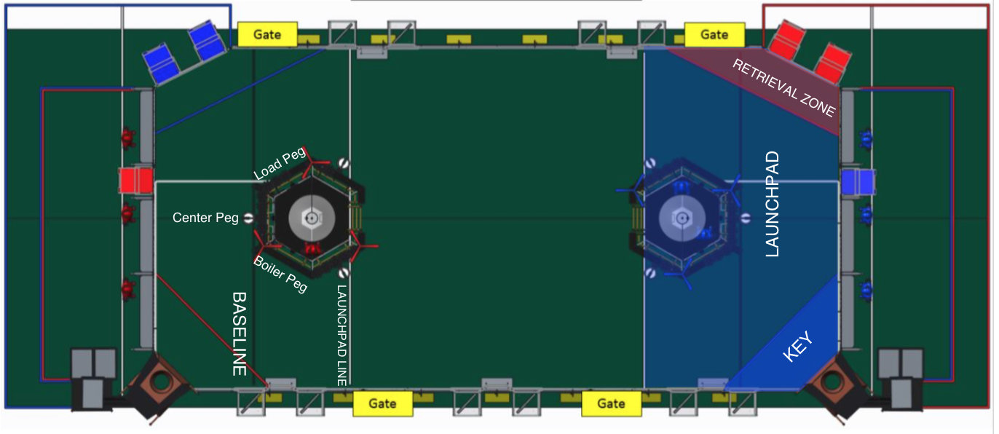

Team 4904's 2017 Stand Scouting
Before Match
Name:
Team Number:
Match Number:
Is their robot present?
No
Yes
Auton

Baseline Crossing?
Does not move.
Moves, doesn't cross baseline.
Crosses the Baseline.
Shoots Fuel?
No
Yes
Number of High Goals Scored:
Amount of fuel scored in the boiler, not the amount of points scored from shooting. Estimate based on the boiler count on the scoreboard.
Number of Low Goals Scored:
The TOTAL number of points SCORED by balls being put into low goal NOT total number of balls (fuel).
Auton Gears:
Tries to score, but fails.
Passively places gear, pilot lifts.
Actively places gear, pilot lifts.
Places two gears.
Submit Form